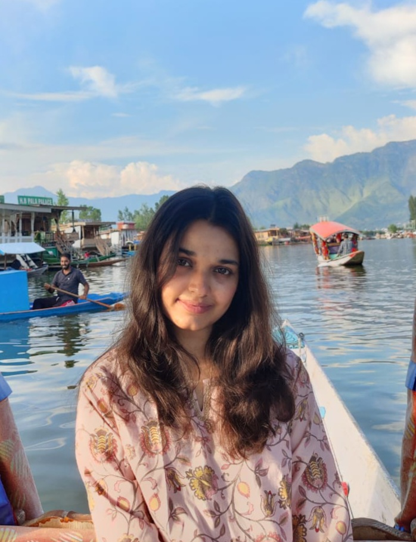

Heyy there, Isra this side. I'm a passionate bioinformatics researcher, with a background in microbiology. My research focus majorly lies in identifying microbial and molecular signatures, genomics, and studying functional pathways with respect to human health, particularly in neurobiology by leveraging machine learning and other cool tech tools.
I've always loved organizing and documenting stuff, both in real world an in thought. This instinct led me to bioinformatics, a field where abstract biological data can be turned into something clear, testable and meaningful.
I started out in microbiology because I was fascinated by the world that exists beyond what the eye can see. In the lab, I found myself obsessing over documenting, sketching, questioning patterns, and trying to link these patterns. Over time, I realized that what I loved most wasn't these organisms themselves but the systems behind them. Today, I work with biological data using computational tools to organize, analyze, and interpret complex information with the intention of bridging the gap between data and discovery.
This is my space on the web to document my journey of learning, building and figuring things out along the way.
Email: isra.aman20@gmail.com
LinkedIn: linkedin.com/in/israamanaziz
GitHub: github.com/Israamanaziz
I analyze biological sequencing data using bioinformatics workflows, based on RNA-seq, miRNA-seq, 16srRNA datasets to turn complex, raw reads into readable and interpretable results.
But hey, why should one bother analyzing biological data at all?
Because right now as you're reading this, you're carrying more microbial cells than your own cells.
More bacteria, fungi, and viruses living on and inside you than the cells that make up "you".
So, we living beings are not just random individuals, but a whole ecosystem.
A walking breathing, universe of an invisible life! I mean, how cool is that!
These microbes influence our immune system, mood, help us digest food and even shape our thought process through metabolite signaling and immune crosstalk.
But when dysbiosis strikes or stressors disrupt the balance, they can morph into opportunistic pathogens, fueling inflammation and disease.
Sooo, This is what I do.
For techies, I analyze biological sequencing data by turning millions of raw reads into valuable insights.
For non-techies, I am basically eavesdropping on these invisible conversations, mapping out who's there, what they're doing, and how they're interacting with each other and with us(host). The purpose is to understand the hidden relations that shape health and disease, to decode the molecular signals that run benath the surface.
Please download my CV to see more: Download CV
Beyond academics, I love writing, constantly and inconsistently. I spend a lot of time jotting down abstract ideas, scattered thoughts, and half-formed processes as a way to understand my own thinking. Documenting and writing help me make sense of people, patterns, and perspectives, which gradually led me toward content writing. I cover a range of topics including educational content,scientific communication and writing, technical writing, and community-focused pieces, and these days I am adapting my voice to suit different audiences and purposes.
P.S. This list could go on and on forever. Let's just sit and talk :)
Avicii · The Midnight · Kaavish · The 1975 · Taylor Swift · Coke Studio · The Local Train · Lorde
Radiolab · Soft White Underbelly · 3Blue1Brown
Description
These are the sites that greatly helped me start out with bioinformatics. If you're just beginning, refer to these curated, handpicked resources to kickstart your own journey. Good luck and happy learning ;)!